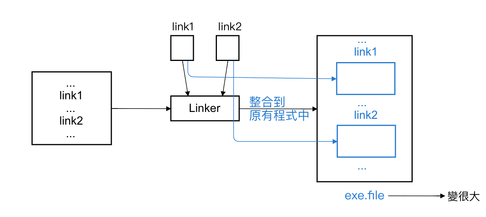
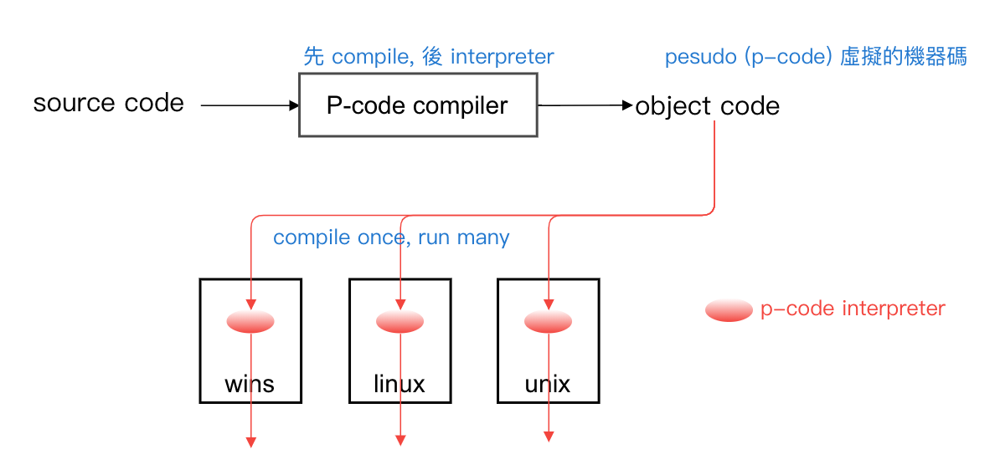
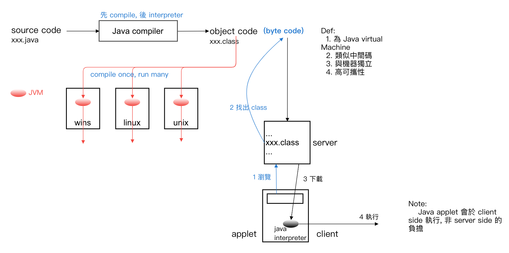
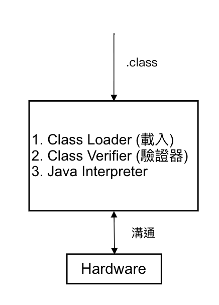

4 系統程式 (System Program)
補充 - Linking 的種類
- Static Linking (like MACRO)
- Dynamic Linking (like Subroutine)
Static Linking
- 指在 linking 時會將外部參考的函式皆搬到程式中, 成為程式的一部份, 故程式將較佔 space, 但後續執行不需去呼叫外部函式
- 巨集 => 程式碼被撐大
- Static Linking => 執行檔會被撐大
- 圖：
Dynamic Linking
- Linking 時, 只將外部參考和外部函式所在做繫結, 不將外部函式載入, 故執行時在動態呼叫之
- Ex: .dll => Dynamic Linking Library
Compare
| Static Linking | Dynamic Linking |
|---|---|
| 可執行檔較大 | 較小 |
| 不需外部呼叫 => 快 | 需要 => 慢 |
| 若外部程式改 => 需 relinking | 不需 |
| 不受外在影響 => 較安全 | 受影響 (駭客可以改, 由於動態呼叫, 因此會被影響) => 較不安全 |
P-code compiler
- Def: 為 pesudo-machine 之 object code
- 類似中間碼
- 與機器獨立
- 高可攜性 => 具跨平台 cross platform
- 圖：
- 優點：只要機器上有 P-code interpreter 即可執行 => 具可攜性
- 缺點：P-code 使用 interpreter 執行, 所以執行速度較慢
- 中間碼：類似目的碼, 由 0, 1 組成, 但和機器獨立
Java-compiler

JVM - Java Virtual Machine
